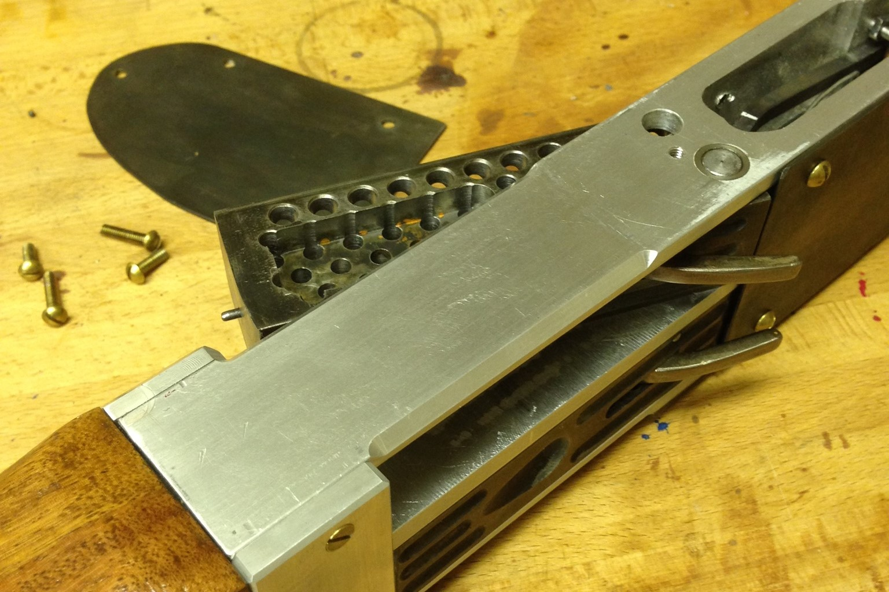
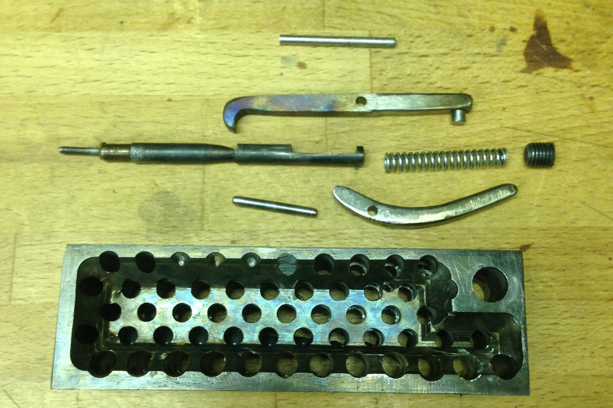
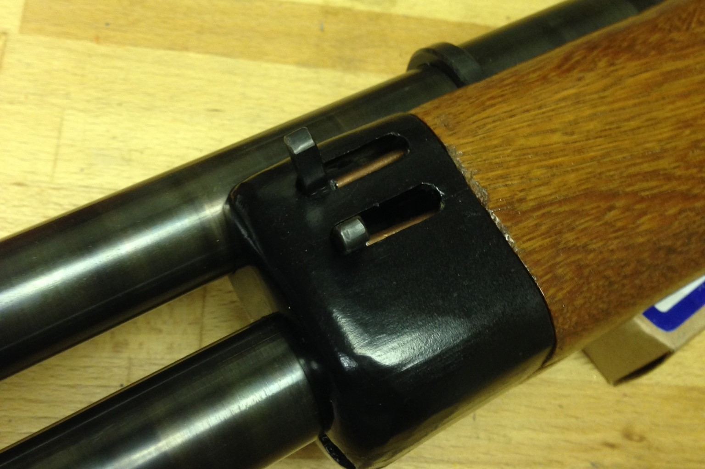
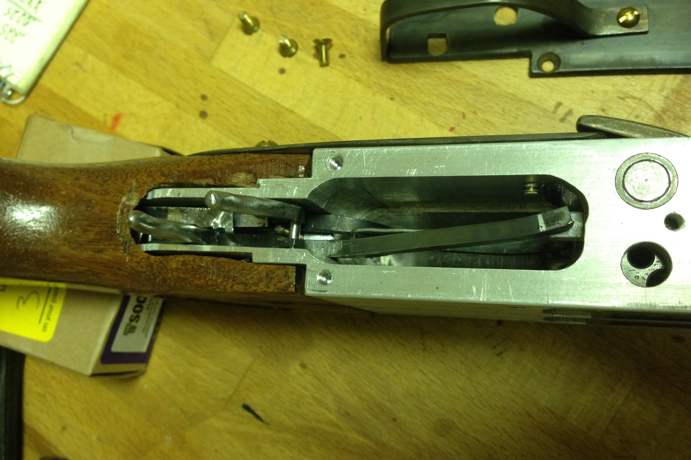
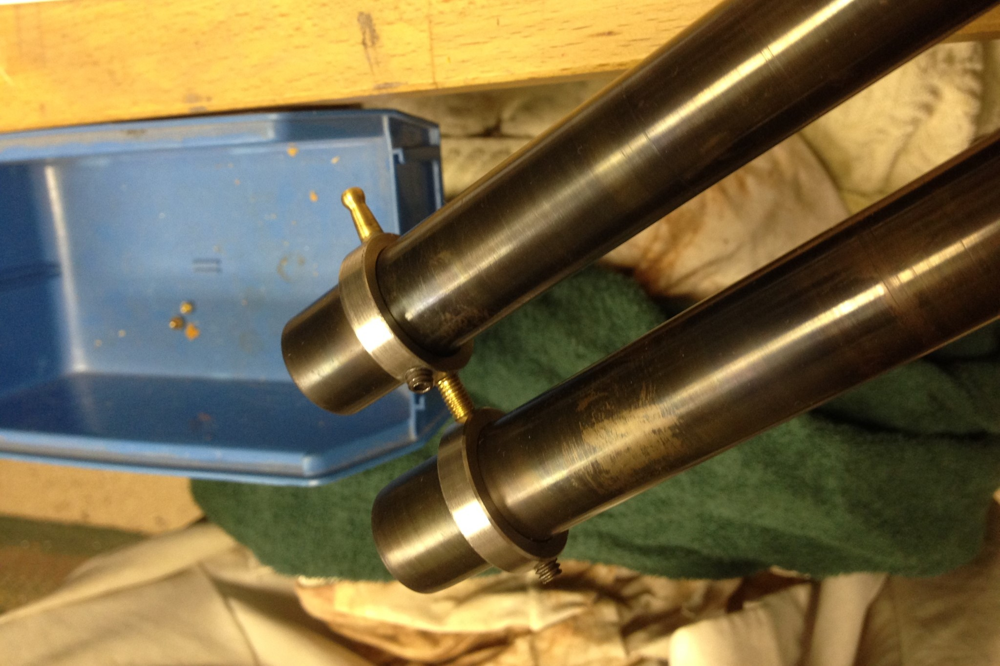
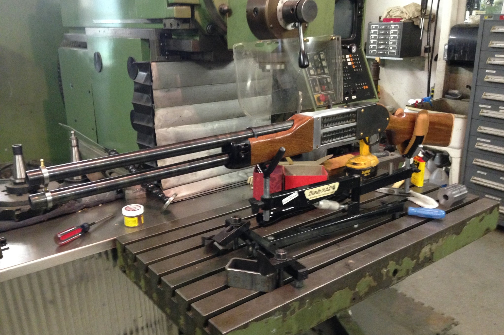

Z1
Fall 2016
The Z1 is a double barrel, O/U 12ga. tilting-block shotgun, and my first firearm.
Video of Firing and Slow-Motion (Youtube)
This is one of very few of my projects to which I can attribute a very specific inspiration: this video. After watching this video I decided that I wanted a shotgun like that, so I set out to build one. I ended up with what is likely the ugliest and worst shotgun ever made, but it was still a very fun and rewarding experience that started my hobby of gunsmithing.

The tilting block action. This picture is taken from the bottom of the gun, with the barrels pointing to the left.
The gun is, above all else, bulky. The receiver is milled from a giant 1.5"x3"x12" block of aluminum to fit the two steel breechblocks. The barrels are not threaded, but instead are just slid into the front of the receiver and then a collar is fed over from the muzzle end that bears against a step in the barrels and threaded rods between the receiver and that collar are tensioned to compress the barrels into the receiver. This compression system is all concealed under the forend. The tilting breech blocks have detents to hold them in the open or closed positions and have internal strikers that are cocked by the levers on the side of the blocks. These levers also provide leverage to open the blocks. As such, the general manual of arms is to push forward on the levers which will simultaneously open the block and cock the internal striker. When the blocks are closed, the two triggers can be pulled, where they cam against extension levers that press against the sears of each block, firing each barrel. After firing, two ejectors can be operated from two levers at the end of the forend via reach rods within the forend.

A breechblock disassembled. Note the dramatic drilling and milled pockets to save on weight. Despite all attempts to save weight, the gun came out to around 12 lbs.

The ejector operating levers.

The triggers, extension levers, and sears. Note the horrible trigger springs made from scrap sheet metal.
After spending a few moments using the gun, it becomes apparent that it is generally terrible in just about every way, so I think it's worth some words to analyze what went wrong, since at its core: the gun does function. The dominant trait that you notice immediately when holding it is how heavy it is. The weight is utterly overbearing at 12 lbs. The stock is made from an extremely dense, heavy, and hard tropical wood that is not well suited to stockmaking, it was just a pretty wood that I had on hand at the time. The barrels are very thick because I used low-strength steel for them and so they needed some reinforcement (but even then, they're thick. I was a little paranoid at the time, so theres a big FoS on this one). The receiver is massive and bulky, despite being aluminum, and adds more girth and weight than needed. The action is very long as well; the chambers are very far from the back of the gun, so the overall length of the gun is quite long, despite having unusually short barrels for a shotgun (23in). The barrel weight is especially devastating because of how far forward they are, so in the end the gun requires a tremendous effort to hold up to fire, and most people would only be able to sustain this reasonably for a few seconds at most.

The muzzle has this double ring with a screw to allow for easy regulation of the gun.
But wait, there's more. The manual-of-arms is also trash and dangerous. The process of ejecting the shells is very difficult and kinda requires three hands, especially considering how hard it is just to hold the gun in the first place, let alone also manipulate the ejection levers which require a ton of force and sometimes a hammer to break the shells loose. The sears are very light, to extent that they are absolutely dangerous. The gun is absolutely not drop-safe, I have gotten it to go off just from a sharp strike on the top of the receiver with my hand. During testing, I even had the second barrel fire due to the recoil of the first barrel. This problem is not easy to fix either because of the way the triggers are connected to the sears. The extension bars create a terrible mechanical disadvantage for the trigger, so the trigger pull is actually pretty heavy. If I strengthen the sear springs any more, the triggers would be impossible to use, and the sears would still be dangerously light. Ultimately the gun is totally impractical, and really only good for display on a wall (which is exactly what I do with it).
